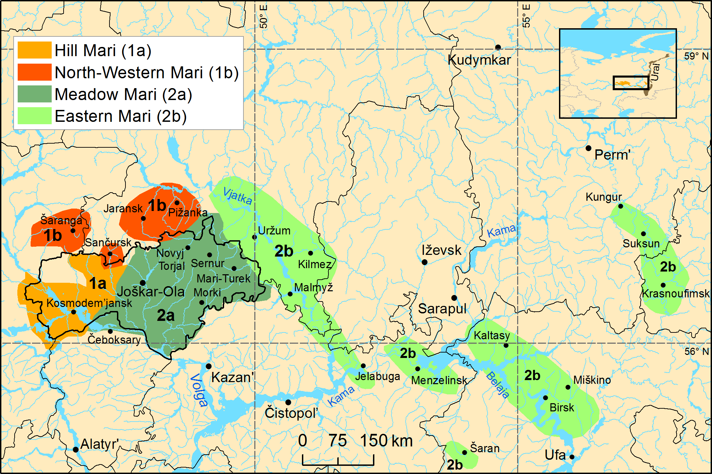

herneh kapustanke › maryjski

Powyższa mapa pokazuje obszar maryjskojęzyczny. Jak widać, nie jest on jednorodny.
Aikio 2025 = Aikio A., The etymology of Mari *jŭmǝ ‘sky; god’, “Finnisch-Ugrische Forschungen” 70, 2025. Dostępny w Internecie: doi.org/10.33339/fuf.145688.